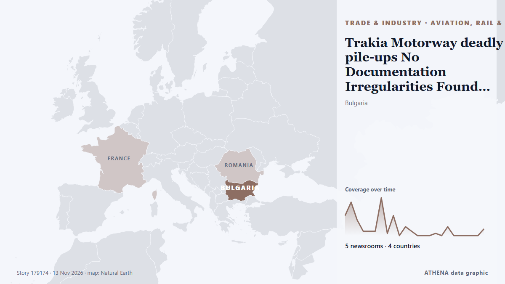

Trakia Motorway deadly pile-ups No Documentation Irregularities Found in Vehicles Involved in Trakia Motorway Pile-Ups

About 50 other people were injured in the pile-ups along a section of the Trakia motorway, officials have said. from BBC News
Reported independently by 5 outlets in 4 countries since 10 Nov, first by BTA (English); coverage is still spreading. ATHENA rates the risk elevated (5.0/10), driven mainly by the severity of the harm described and its geographic and sector reach. Confidence is 69% (high), with 5 independent outlets corroborating it and an average source reliability of 69%. Outlets by country: Bulgaria (32), United Kingdom (1), Azerbaijan (1). Coverage: 10 Nov to 11 Nov, 25 hours.
Why it matters: Disruption to trade, industry or infrastructure travels along supply chains, changing costs and delivery times far away.
What changed: 7 new reports from 1 outlets in the 24 hours to 13 Nov.
First reported as: President Iotova Cuts Short Paris Visit Following Pile-up Collisions on Trakia Motorway
How to read this page
- What you are reading
- 5 outlets in 4 countries reported this event. The reports below are listed in the order they appeared; each headline opens the original article. ATHENA writes none of the reports.
- Our reading
- For the record — The reports describe a completed, domestic, commercial or personal matter. We list it so you can see who reported it and when. We are not tracking a risk of wider conflict here.
- How much evidence
- Limited Treat this page as an early report.
After repeats, off-topic items and stale reports are removed, 5 of the 35 listed reports are counted; 100% of the headlines match the event.
- What this does not mean
- ATHENA measures how an event is reported, not whether it is true. This is not a forecast, a judgement on who is right, or advice.
- What would change it
- Reports from other independent outlets showing a different development, or a firm confirmation or denial from an official source.
Reading R2 · refreshed with every update of this page. ATHENA has not yet published a track record for these readings; when it does, it will be linked here.
At a glance
Selected, scored and written by ATHENA's published methodology. No editor intervenes in individual events. How this is produced ›
| 10 Nov 12:57 UTC | 9 |
|---|---|
| 10 Nov 15:57 UTC | 15 |
| 10 Nov 18:57 UTC | 7 |
| 10 Nov 21:57 UTC | 2 |
| 11 Nov 00:57 UTC | 2 |
| 11 Nov 03:57 UTC | 2 |
| 11 Nov 06:57 UTC | 17 |
| 11 Nov 09:57 UTC | 1 |
| 11 Nov 12:57 UTC | 9 |
| 11 Nov 15:57 UTC | 0 |
| 11 Nov 18:57 UTC | 4 |
| 11 Nov 21:57 UTC | 2 |
| 12 Nov 00:57 UTC | 0 |
| 12 Nov 03:57 UTC | 0 |
| 12 Nov 06:57 UTC | 0 |
| 12 Nov 09:57 UTC | 1 |
| 12 Nov 12:57 UTC | 0 |
| 12 Nov 15:57 UTC | 4 |
| 12 Nov 18:57 UTC | 0 |
| 12 Nov 21:57 UTC | 0 |
| 13 Nov 00:57 UTC | 0 |
| 13 Nov 03:57 UTC | 0 |
| 13 Nov 06:57 UTC | 0 |
| 13 Nov 09:57 UTC | 3 |
| 10 Nov 13:03 UTC | 5.0 |
|---|---|
| 11 Nov 20:16 UTC | 3.5 |
| 11 Nov 21:16 UTC | 5.1 |
| 13 Nov 11:39 UTC | 5.0 |
Why these numbers
Importance
Risk
Confidence
The reporting — who reported it, and when
headline as published · opens the original- BTA (English) · BulgariaPresident Iotova Cuts Short Paris Visit Following Pile-up Collisions on Trakia Motorway
- BTA (English) · BulgariaTrakia Motorway pile-ups UPDATED Eleven Killed in Two Pile-Ups on Trakia Motorway near Yambol
- BTA (English) · BulgariaNational Investigation Service Takes over Trakia Motorway Pile-Ups Investigation, Yambol District Prosecutor Says
- BTA (English) · BulgariaEuropean Commission President von der Leyen Expresses Condolences for Deaths in Trakia Motorway Accident
- BTA (English) · BulgariaHealth Minister Says 46 Taken to Hospital after Trakia Motorway Pile-Ups
- BTA (English) · BulgariaPM Radev Sends Government Aircraft to Assist Victims of Trakia Motorway Pile-Ups, Calls Off Cabinet Meeting
- BBC News · United KingdomTwelve dead after motorway pile-ups in Bulgaria fog
- BTA (English) · BulgariaUPDATED Politicians React after Trakia Motorway Deadly Pile-Ups
- BTA (English) · BulgariaTrakia Motorway deadly pile-ups Deadly Pile-ups on Trakia Motorway in Last 23 Years: A Look Back
- BTA (English) · BulgariaGERB Calls for Resignation of PM Radev, Ministers over Deadly Trakia Motorway Pile-Up
- BTA (English) · BulgariaPatients Injured in Motorway Pile-up Are in Stable Condition, Health Minister Says After Hospital Visit
- BTA (English) · BulgariaTrakia Motorway deadly pile-ups UPDATED Cabinet Declares Wednesday Day of National Mourning for Victims of Tragic Pile-Ups on Trakia Motorway
- BTA (English) · BulgariaNine Investigators to Probe Trakia Motorway Crashes, Visibility Was 70-80 Metres, Interior Minister Says
- BTA (English) · BulgariaMP Desislava Taneva Says No Safety Measures Were Taken on Trakia Motorway Despite Dense Fog
- BTA (English) · BulgariaCouncil for Electronic Media Warns against Sensationalist Coverage of Trakia Motorway Pile-Ups
- APA (English) · AzerbaijanEleven killed, 50 others injured in two pile-up accidents in Bulgaria
- BTA (English) · BulgariaInterior Minister Blames Legacy of Poor Road Infrastructure after Deadly Trakia Motorway Crashes
- BTA (English) · BulgariaLack of Danger Sign on Motorway Not Subject of Investigation into Pile-ups' Cause - Acting Investigation Service Director
- BTA (English) · BulgariaBlood Donation Campaign for Victims of Trakia Motorway Pile-ups to Take Place on Wednesday in Sofia
- BTA (English) · BulgariaWrap-up Eleven Killed, 51 Hospitalized in Trakia Motorway Pile-Ups Involving 86 Vehicles
- BTA (English) · BulgariaDay of National Mourning in Bulgaria for Victims of Tragic Pile-Ups on Trakia Motorway
- BTA (English) · BulgariaTrakia Motorway deadly pile-ups Health Minister Says There Is Enough Blood to Treat Victims of Trakia Motorway Accidents
- BTA (English) · BulgariaTrakia Motorway deadly pile-ups Yambol District Prosecutor: Truck Driver Detained for Questioning over Pile-ups, No Charges against Him
- BTA (English) · BulgariaTrakia Motorway deadly pile-ups Yambol Fire Safety Chief: 15 Firefighting Teams from Five Regions Took Part in Rescue of Pile-ups' Victims
- BTA (English) · BulgariaTrakia Motorway deadly pile-ups Romanian Injured in Tuesday's Pile-ups Is in Critical Condition in Burgas Hospital
- BTA (English) · BulgariaDay 8 RSV 421 Flies Flag at Half-Mast to Honour Victims of Trakia Motorway Pile-Ups
- BTA (English) · BulgariaYambol Police Chief: Truck Driver Detained in Relation to One of Tuesday's Pile-ups on Trakia Motorway
- BTA (English) · BulgariaYambol Regional Governor: No Emergency Call Made about Fog at Site of Tuesday's Pile-ups before Crashes
- BTA (English) · BulgariaTotal of 26 Injured in Tuesday's Pile-ups Remain Hospitalized in Sliven, Yambol
- Romania Insider · RomaniaRomanian truck driver reportedly detained for questioning after deadly Bulgaria motorway pile-up
- The Sofia Globe · BulgariaBulgaria’s Trakia Motorway tragedy: Recriminations and compensation
- BTA (English) · BulgariaTrakia Motodway deadly pile-ups Intelligent Transportation System to Be Procured for Trakia Motorway, Minister Says
- BTA (English) · BulgariaInterior Ministry Psychologists Provide Support Following Trakia Motorway Crashes
- BTA (English) · BulgariaForeign Ministry Extends Condolences to Families of Victims of Trakia Motorway Crashes
- BTA (English) · BulgariaRSV 421 Crew, Bulgarian Delegation Honour Victims of Trakia Motorway Pile-Ups with a Minute’s Silence